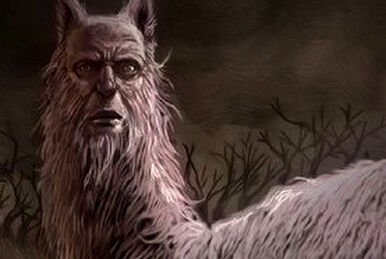
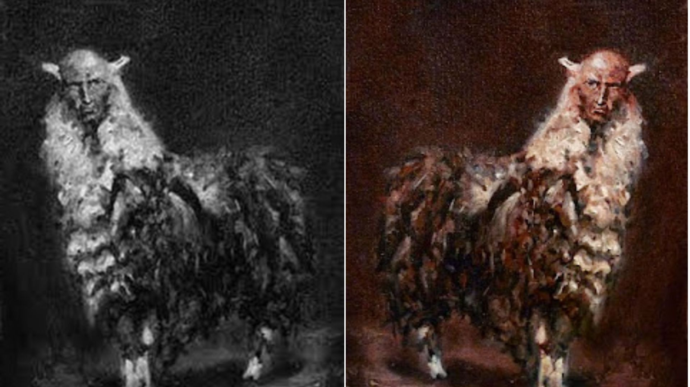

Una de las criaturas más importantes dentro del bestiario mitológico de la cultura andina del Perú es el Jarjacha (Tambien llamado Carqac o Qarqacha), es una llama de dos o hasta tres cabezas, e incluso antropomorfa, mitad hombre y mitad llama, que aterra a los pobladores de la serranía con un grito estruendoso expresado como un qar-qar-qar de donde proviene su nombre.
Según la mitología, el Jarjacha sería en realidad personas, seres humanos condenados por Dios ha convertirse eternamente en este monstruo por haber cometido uno de los pecados sexuales más trasgresores para el cristianismo, el pecado del incesto.

oda persona que comete una relación carnal entre padres e hijos, correrá el riesgo de convertirse en esta criatura, que según las historias tiene el poder de hipnotizar a sus víctimas mirándolas fijamente a los ojos para luego asesinarlas.
Para matar a un Jarjacha, uno deberá convocar un conjunto de personas, las mismas que deberán estar provistas con fuertes cuerdas hechas de lana de llama, crucifijos, y cualquier objeto de metal que pueda también ser usadas como armas, como picos, barretas o hachas, de las que se dicen serían las más efectivas.

Sin embargo, pese al miedo popular que se le tiene a esta criatura, no todos los pobladores desean su muerte y es que existen testimonios que aseguran que lo más "beneficioso" no es su muerte, sino, simplemente su captura, esto debido a que la leyenda advierte que el Jarjacha, sólo se transforma de noche, es por ello, que muchos lo capturan para luego, aprovechando la luz del día y volviendo el Jarjacha a ser un ser humano, reconocerlo y pedirle una fuerte cantidad de dinero para no divulgar el secreto sobre quién de todos los ciudadanos del pueblo ha cometido el terrible pecado del incesto con uno de sus hijos.